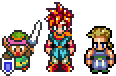
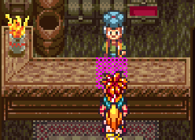
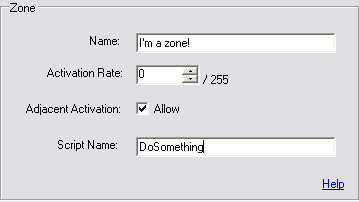
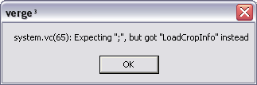

Sprites/Entities/Chr's:
Ever play a Final Fantasy game on the NES/SNES? What about
Chrono Trigger? Zelda? Remember those characters that you moved around, or
talked to during the game? Well those are sprites. Another term that us vergers
use is Chr's, simply because this is the file-type that our sprite and its
information is stored in. What kind of information? Well there's a lot that
goes into a sprite. You have to think that these sprites are going to animate
while walking, they're going to need a time between frames, they're going to
need a frame of animation to look at while they're not moving, and much much
more. Let's look at all that is needed to create sprite:
There's another tutorial out there on creating a sprite, so I won't get into that here, so check here, to see how about making one.
Fonts:Maps and Tilesets(VSP):
Maps are incredibly important in verge RPG's. Basically
"maps" are the towns, forests and dungeons that your sprites are
going to be walking in. They consist of a tileset (different images put
together to create a scene, also known as VSP’s), obstruction information
(things that will prevent your sprites from walking through walls, etc.),
animation (Like water, or the fire in torches), zones (something I'll get to
in a minute), layers (so your sprite can walk under trees) and are accompanied by .vc files (we'll go into these
a little later).
Tilesets are, by default, made up of 16x16 blocks of images
that you take and put together to form objects on a map. For example: If you
wanted to create a rather large tree, you'd probably have 4 16x16 tiles that
made up the entire tree. In the future, you will not be limited to using only
16x16 tiles, however, as of this writing (July 31st, 2004),
stuck with them.
You can create maps using Verge's awesome map editor called
MapED, and again there is another tutorial on creating maps so you can check it
out here.
Music and Sound Effects:
This is my area of expertise, but luckily there isn't very
much to say about how Verge3 handles these. For music you can use a variety of
popular formats including: .mp3, .ogg, .it, .s3m, .xm, .mod and .wav. There may
be others but these are generally the most popular.
We'll get into how to load, play, and
what you can do with music/sound effects a little later.
Zones and events:
To understand zones, you must first understand events. An
event is a set of actions that takes place when you "call" it. An event is a
script, coded by you, that tells the engine to do certain things, when certain
conditions are met. Think of it this way. Your player is walking around your
nicely drawn town, when suddenly he notices a shop. Logically, you're player is
going to want to stock up on items, equipment and anything else you decide to
sell at a shop. Well, in the maps .vc file, we would create an "event" that
tells VERGE to call a shop function when a player talks to the shop owner. A
condition is met (the player talks to the shop owner) so an action is taken
(call the shop function). That is an event.
A zone tells us a couple of things. Where
the event will take place, how the event will take place and what
event will take place. A zone is placed in the map editor over a tile where an
event can be activated. Refer to the image below while you read
this description. Notice that there is a table between Chrono and the
Shopkeeper. Where the tile where you see magenta is where we would place a "zone".

A zone has properties (refer to image on the right) , which will tell it how it should behave. You have
to assign it a "script name", which is the event created in the maps .vc file,
how it will be activated (either the player just touches it, or he presses the
confirm key), and the “activation rate” of the event being called. (But only if
you set it to be activated by touching it). In this case we would use what’s
called "Adjacent Activation" which basically means we can "activate" the zone,
by pressing the confirm key while beside it.
An example where you would use the
"activation rate" of an event being called would be with random battles. You
could litter the screen with zones that would call a "Start Battle" script (an
event), and create the encounter rate by adjusting the "rate".
. Vc files and scripts:
We have talked about these a lot, now it’s time to learn just what they are.
There are two types of .vc files. One is a map .vc, which will contain all the
code/events/scripts related to that map only. The map.vc file must have the
same name as the map it corresponds with. For example if you had a map called
"uber-leet-village.map" then it’s .vc file must be named
"uber-leet-village.vc". Not too tough to remember. :)
Inside "uber-leet-village.vc: would be
a bunch of scripts/events written by you to tell the engine how to act when an
event is called. This includes things like reading a book on a table, opening a
treasure chest and talking to any NPC (Non-payable characters(Townsfolk, etc.))
among other things.
It should be mentioned that you have
the ability to set a script/event to happen as soon as the map is loaded. This
is done in maped, and you will more than likely find yourself using this
feature. Basically, you could have a script called “start” where you would put
in things like fade-ins, the map co-ordinates where the player sprite starts,
and other events that must happen as soon as the map is loaded (for example; a
dramatic cut-scene.)
The other type of .vc file doesn't
really have a proper name, but I'll call it a "system" file. A system file
will #include (you'll get that joke shortly :P) all the code and
functions that make up the heart of your game. This includes stuff like your
battle system, menu system, inventory, and speech functions. Basically anything
that you'll want to call more than once, and use in different situations. Most
important of these files, and the only one you MUST have, is system.vc. Every
game has one, as it is the file that VERGE will look to for instruction when
you first start your game.
For organizational purposes you can
have many different “system” .vc files that you can "#include" in
your system.vc file. #include is what is known as a "pre-processor directive",
which is just a fancy term for "compile this information before anything else."
What does "compile" mean? We'll get to that in the next section. For now, just
remember that you have the ability to organize your code into different files.
For example, you could have all your graphics code in a file called
"graphics.vc" and all your menu code in a file called "menu.vc". You would then
#include both of those in your system.vc so that verge knows to look for the
functions found in both.
The system.vc file also MUST contain
a function called Autoexec(). This function will tell the engine what to do as
soon as it starts. For example, if you want your game to go to a title screen
as soon as you fire up Verge.exe then you would tell the engine this in the
Autoexec() function.
VergeC (VC); The Scripting Language:
While coding your game you'll be using Verge3’s built-in
scripting language called "VergeC" (or just VC). Verge C is very much like the programming
language C in syntax respects but isn't quite as powerful. There are a lot of
differences between VergeC and regular C; however, if you've ever programmed in
C then VergeC will look very familiar. Programming in VergeC is a tutorial all
on its own, so when you are ready go here, and read about what
it can do.
Compiling?
Compiling is a term that you'll find associated with just about every programming
language. When we write code in a language like Verge3, we use words, and syntax
that make sense to us, whether it is for easier reading, faster learning, or
whatever. Our computers, however, don't understand that language. A compiler
takes these words and symbols that we write and translates them into a language
that the computer can read. The compiler will also tell us if we've made
certain errors in our code. A misspelled function call, forgotten semi-colon,
and other things, which we'll get into later.

In Verge3 we don't have to worry too
much about compiling as it has the ability to do something called "Run-time
compiling". This means that when you double-click on Verge.exe it will
automatically compile for you. If the compiler comes across something it
doesn't understand, it will spit out an error at you, with some information that
will help you track down what the problem is.
We'll get into how to handle error
messages a little later on, and we'll even learn how we can turn off the
compiler to speed up loading times!
I just want to make a game ;_;
Don't be discouraged if a lot of this doesn't make a whole lot of sense right now. We'll
be getting into exercises and working with verge first hand now, which in my
experience, is the only way to learn how to do this stuff. I'm just giving you
a little background info so that when I throw a term at you, there'll be no
surprises.^_^